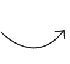
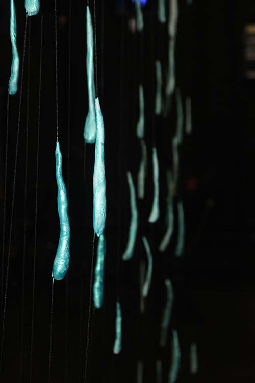

De l'autre côté... de la création
-
Un projet
On eu envie de parler de la fratrie qui rassemble les frères et les soeurs, des liens qui se tissent et de toutes la aventures qui nous lient, réelles ou imaginaires. On a décidé d’en faire une pièce de théâtre pour que tu puisses découvrir un nouveau monde, sur scène, que tu puisses rigoler et être surpris.e. C’est pour ça qu’on a passé une commande auprès de l’autrice, Karin Serres.
-

-

L'écriture
Le métier de Karin Serres est d’écrire des histoires. C’est elle qui a écrit les textes que récitent les comédiens. Comme on lui avait demandé d’imaginer une histoire autour de la fratrie, elle a eu envie de parler de tes frrr et de tes srrr, ceux qui existent ou ceux que tu imagines.
-

-

Le décor
Pour que tu sois plongé.e dans l’univers raconté par la pièce, une scénographe imagine et conçoit l’ensemble des décors. Il y des grands décors que tu trouveras facilement car ils prennent beaucoup d’espace mais il y a aussi les petits décors avec tous les objets que tu trouveras sur scène et qu’utilisent les comédiens.
-

-
La musique
Lorsqu’une pièce se joue, tu entends des musiques, tu entends des bruits, ici et là. C’est le travail du compositeur qui écrit les partitions pour te plonger dans l’athmosphère et rythmer le texte des comédiens.
-
-

Les lumières
Quand le rideau se lève, la salle est plongée dans le noir et les projecteurs se braquent sur la scène et suivent les va-et-vient des comédiens ! Durant tout le spectacle, une véritable valse des lumières se jouent et te permet de ne pas perdre une miette de la représentation.
-
-

Les costumes
Dans toutes les pièces de théâtre, il y a des costumes. Ils permettent d’endosser la peau d’un autre personnage et participent à plonger la pièce dans un autre univers…. en t’emmenant avec eux ! Et toi, as-tu déjà porté des costumes pour jouer un rôle ou pour t’amuser ?
-

-

La répétition
On ne monte pas sur scène sans avoir répété avant ! Les comédiens jouent et rejouent de longues heures avant la représentation pour apprendre leur texte, pour s’imprégner de l’espace et pour comprendre leur personnage. C’est le rôle de la metteuse en scène de diriger les comédiens. C’est elle qui choisit où ils vont se placer sur scène ou encore quelles intonations ils doivent prendre. Lorsque tu verras la représentation, tu n’y verras que du feu…
-
-
La représentation
Et voilà, c’est le jour J ! Tout le monde est prêt pour que la pièce soit jouée. Vite les derniers décors se mettent en place, les comédiens enfilent leur costume, tu t’installes confortablement dans la salle, les lumières s’éteignent et le rideau se lève…
Crédits photo : Patrick Ellouz
De l'autre côté... des coulisses
Crédits
De l'autre côté... des trésors
De l'autre côté... des visages et des voix
-
Adeline

Est-ce que tu as peur du noir ? -
Camille

Comment conserves-tu tes souvenirs ? -
Christine
Comment as-tu pensé les décors du spectacle ? -
Emilie
As-tu souvent été en forêt ? -
Julie

Crois-tu aux pouvoirs magiques ? -
Lucas
Est-ce que tu pensais avoir un super-pouvoir ? -
Karine
Pourquoi écrire est un super-pouvoir ? -
Marc

Comment as-tu composé les musiques du spectacle ? -
Patrick

Quel est le rôle de la lumière dans un spectacle ? -
Et de nombreuses personnes en coulisses : Josselin Tessier, Isabelle Vialard, Nicolas Geneste, Virginie Pateyron, Camille Schaefer …